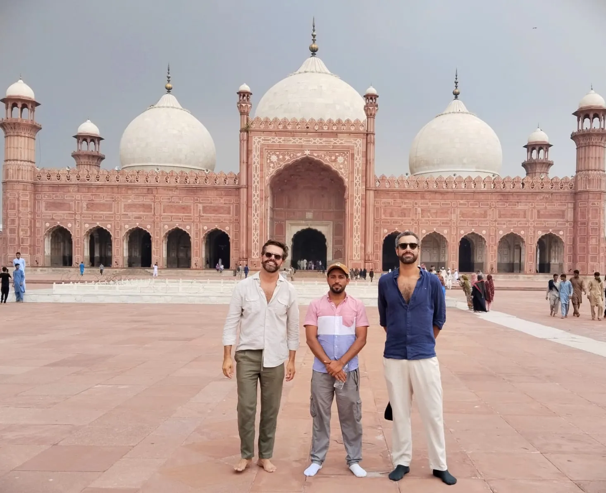

Of all the places we show our guests in Lahore, Badshahi Mosque is the one they talk about most. You climb the steps, walk through the great gate, and the courtyard suddenly opens out in front of you: red sandstone, three white marble domes and a minaret at each corner. This short reel is made from real photos of our guests and real lines from their Google reviews. We first shared it on Instagram.
The story of Badshahi Mosque
The name means the Emperor's Mosque, and its history follows the history of Lahore itself, from Mughal glory to neglect and back again.
- 1671 to 1673: built in two years. The Mughal emperor Aurangzeb ordered the mosque, and his foster brother Fidai Khan Koka, the governor of Lahore, oversaw the work. It was built directly opposite Lahore Fort and its Alamgiri Gate, which was built at the same time.
- 1673 to 1986: the largest mosque in the world. For more than 300 years no mosque anywhere was bigger. The record finally passed to the Faisal Mosque in Islamabad, which you can read about in our Faisal Mosque guide.
- From 1799: a stable and barracks. After Ranjit Singh's army took Lahore, the courtyard was used to keep army horses and the cells around it as soldiers' quarters.
- 1846 to 1852: a British garrison. When the British took Lahore they too used the mosque as a garrison. In 1852 they set up the Badshahi Mosque Authority to begin returning it to worship.
- 1939 to 1960: the great restoration. Sir Sikandar Hayat Khan raised funds for major repairs from 1939, and the work was completed in 1960. His tomb stands near the entrance, close to the tomb of the poet Allama Iqbal.
- 1993: on UNESCO's tentative list. Pakistan put the mosque forward for World Heritage status, alongside its neighbour, Lahore Fort, which is already a World Heritage Site.
For a guide to what to look for inside, from the stairway and the domes to the minarets, see our top 10 things to see at Badshahi Mosque.
What our guests say
Our tours of Lahore have a 5.0 rating on Google from 39 reviews (November 2026). These are a few of the lines in the reel, in our guests' own words:
“Bilawal made our day!”
Mantas G., Google review
“Bilawal was a God-send on my first day in Lahore as a solo female traveller.”
A V, Google review
“We were able to discover the atmosphere and soul of Lahore thanks to his insights, knowledge and hidden stories.”
Camille JG, Google review
“He gave us a perspective we would have otherwise missed: a deeper understanding of the fort, the mosque, and the broader history of Pakistan.”
Rustam A., Google review
You can read every review, in full, on our reviews page.
Tips for visiting Badshahi Mosque
- Dress modestly, with shoulders and knees covered. Women should bring a scarf for their hair
- Shoes come off before you enter the courtyard; there is a shoe counter by the steps, and a pair that slips off easily helps
- Visit outside prayer times, and avoid Friday midday, when the mosque fills for Friday prayers
- The red sandstone glows in the late afternoon. Come in the hour before sunset for the best light and photos
- In summer the courtyard stones get very hot, so go early or late in the day
- Ask before photographing people, especially anyone praying
- Lahore Fort is directly opposite, with Hazuri Bagh between them; see our Lahore Fort guide and what to wear in Lahore
Frequently asked questions
When was Badshahi Mosque built?
Badshahi Mosque was built between 1671 and 1673 on the orders of the Mughal emperor Aurangzeb. The work was overseen by his foster brother Fidai Khan Koka, then governor of Lahore, and the mosque opened in 1673 after only two years of construction.
Was Badshahi Mosque the largest mosque in the world?
Yes. From its completion in 1673 until 1986, when the Faisal Mosque in Islamabad was finished, it was the largest mosque in the world. It is still the largest mosque built in the Mughal era.
Can non-Muslims visit Badshahi Mosque?
Yes. Visitors of all faiths are welcome outside prayer times. Dress modestly, take off your shoes at the entrance, and be quiet and respectful near people who are praying. Friday midday prayers are the busiest time, so plan around them.
What should I wear to Badshahi Mosque?
Cover your shoulders and knees; long trousers or a long skirt and a top with sleeves are ideal. Women should bring a scarf to cover their hair. Shoes come off before the courtyard, so wear a pair that is easy to slip off.
How long do you need at Badshahi Mosque?
Allow about an hour for the mosque itself. Because Lahore Fort, Hazuri Bagh and the tomb of Allama Iqbal are right next to it, most visitors combine them into a half day.
See Badshahi Mosque with a local guide
Our Lahore Fort and Badshahi Mosque heritage walk brings the stories behind these buildings to life, and the Lahore full-day tour adds the rest of the city. Tell us your dates on WhatsApp and we will plan the visit around prayer times and the best light.
Video and photos: Past Enlighten, shared with our guests' permission. Follow @pastenlighten on Instagram for more from Lahore.
Explore with Past Enlighten
Ask about route options, dates and what is included. Confirm the price and itinerary in writing before you book.
Continue planning
Travel conditions, access, schedules and prices can change. Confirm current details locally before departure.